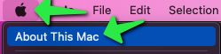
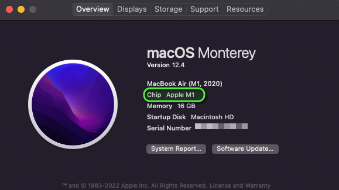
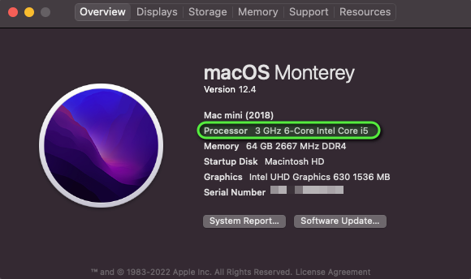

Installation Instructions
R/RStudio sections adapted from datacarpentry.org
Please install everything before you arrive. Mr. Sabone will run a setup session at 9:00 on both mornings, but the downloads are large and conference wifi is not — arriving with software already installed will save you an hour.
| Software | Needed for | Day |
|---|---|---|
| R (4.3.1+) | Everything | 1 & 2 |
| RStudio (2023.09+) | Everything | 1 & 2 |
| AliView | Viral evolution — sequence alignment | 2 |
| IQ-TREE 3 | Phylogenetics — tree building | 2 |
| FigTree 1.4.4 | Phylogenetics — tree visualisation | 2 |
| BEAST 1.10.5 | Phylodynamics | 2 |
1 R and RStudio
R is the statistical computing environment; RStudio is the interface that makes it usable. They are separate downloads and R must be installed first. Once both are in place you only ever open RStudio, which runs R in the background.
Install R version 4.3.1 or later and RStudio version 2023.09.0 or later.
1.1 Step 1 — follow the instructions for your operating system
1.1.0.1 For Windows see Section 2.5
1.1.0.2 For MacOS see Section 2.6
1.1.0.3 For Linux see Section 2.7
1.2 Step 2 — install the R packages
Open RStudio and paste the following into the console (bottom-left). It will take several minutes.
Core — everyone needs these:
install.packages(c("tidyverse", "here", "knitr", "rmarkdown", "quarto",
"janitor", "broom", "patchwork", "cowplot", "colorspace",
"ggrepel", "ggbeeswarm", "pheatmap", "RColorBrewer"))Machine learning and multi-OMICS (Day 1):
install.packages(c("tidymodels", "glmnet", "randomForest", "caret",
"umap", "Rtsne", "factoextra", "cluster"))Phylogenetics (Day 2):
install.packages(c("ape", "phangorn", "phytools", "seqinr"))Bioconductor — RNA-Seq, single cell, and tree plotting (Days 1 & 2):
if (!require("BiocManager", quietly = TRUE)) install.packages("BiocManager")
BiocManager::install(c("DESeq2", "edgeR", "limma", "mixOmics",
"ggtree", "treeio", "ComplexHeatmap"))library(tidyverse); library(ape); library(DESeq2)
sessionInfo()If those three load without error, you are ready. If a package failed, note which one and bring it to the setup session.
The single cell multiome session uses Seurat. It is a big install with many dependencies — do it in advance, on a good connection, or follow along without running the code.
install.packages("Seurat")2 Bioinformatics tools
These are standalone applications, not R packages. Day 2 only.
2.1 AliView — sequence alignment viewer
Download from ormbunkar.se/aliview/. Available for Windows, MacOS, and Linux. Requires Java — if AliView will not start, install Java from adoptium.net and try again.
2.2 IQ-TREE 3 — maximum likelihood trees
Download from iqtree.github.io.
IQ-TREE runs from the command line. Unzip it somewhere you can find, then test it from a terminal:
# MacOS / Linux
./iqtree3 --version
# Windows (Command Prompt, from the folder you unzipped into)
iqtree3.exe --version2.3 FigTree 1.4.4 — tree visualisation
Download from github.com/rambaut/figtree/releases. Also requires Java.
2.4 BEAST 1.10.5 — phylodynamics
Download from beast.community/installing. Requires Java. The BEAST package includes BEAUti, which you will use to set up the analysis.
AliView, FigTree, and BEAST all need Java. If any of them refuse to open, Java is the first thing to check. Install it from adoptium.net (Temurin 17 or later is fine) and restart the application.
2.5 Windows
2.5.1 If you don’t have R and RStudio installed:
Go to https://posit.co/download/rstudio-desktop/ and follow this instruction for windows.
2.5.2 If you already have R and RStudio installed, check to see if updates are available.
RStudio: Open RStudio and click on Help > Check for updates. If a new version is available, quit RStudio, and download the latest version.
R: Upon starting RStudio, the version of R you are running will appear on the console. You can also type sessionInfo() in the console to display the version of R you are running. The CRAN website will tell you if there is a more recent version available. You can update R using the installr package, by running:
# installr is for windows only!
if( !("installr" %in% installed.packages()) ){install.packages("installr")}
installr::updateR(TRUE) 2.6 MacOs
2.6.1 Check your processor
adapted from https://docs.cse.lehigh.edu/determine-mac-architecture/
Make sure you are downloading and installing the right version of R and R Studio for your laptop’s CPU. Some Macs have an intel chip (also known as x64 or x86_64 architecture), while the newest macs have M1 or M2 chips (also known as ARM architecture).
To determine whether a Mac is running an Intel Processor or Apple ARM M1 or M2, click on the Apple Menu and select ‘About this Mac’:

From the ‘About this Mac’ screen, on the ‘Overview’ tab, look for a line that indicates either ‘Chip’ or ‘Processor’. If the line contains M1 or M2, the machine is running Apple Silicon. Alternatively, the word Intel indicates that the machine is running an Intel-based Core series processor.


2.6.2 If you don’t have R and RStudio installed:
Go to https://posit.co/download/rstudio-desktop/ and follow this instruction for MacOS.
2.6.3 If you already have R and RStudio installed, check to see if updates are available.
RStudio: Open RStudio and click on Help > Check for updates. If a new version is available, quit RStudio, and download the latest version.
R: Upon starting RStudio, the version of R you are running will appear on the console. You can also type sessionInfo() to display the version of R you are running. The CRAN website will tell you if there is a more recent version available. For this workshop install version 4.3.1 of R
2.7 Linux
2.7.1 If you don’t have R and RStudio installed:
Go to https://posit.co/download/rstudio-desktop/ and follow this instruction for your Linux OS.
2.7.2 If you already have R and RStudio installed, check to see if updates are available.
RStudio: Open RStudio and click on Help > Check for updates. If a new version is available, quit RStudio, and download the latest version.
R: Upon starting RStudio, the version of R you are running will appear on the console. You can also type sessionInfo() to display the version of R you are running. The CRAN website will tell you if there is a more recent version available. For this workshop install version 4.3.1 of R